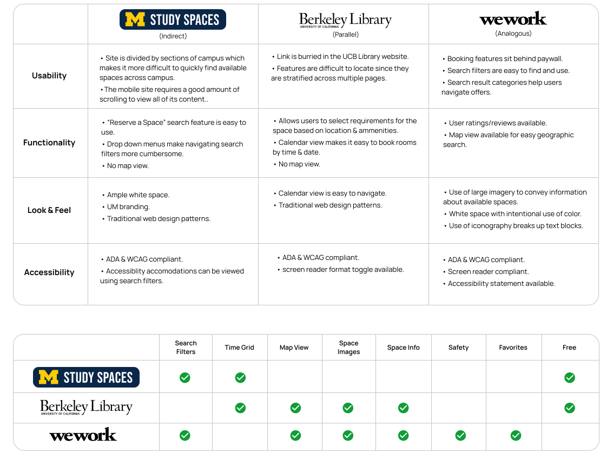
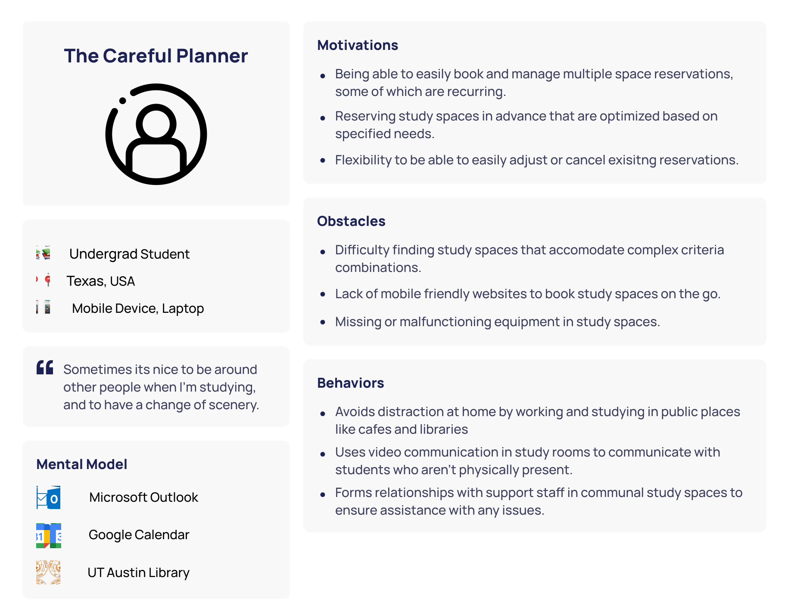
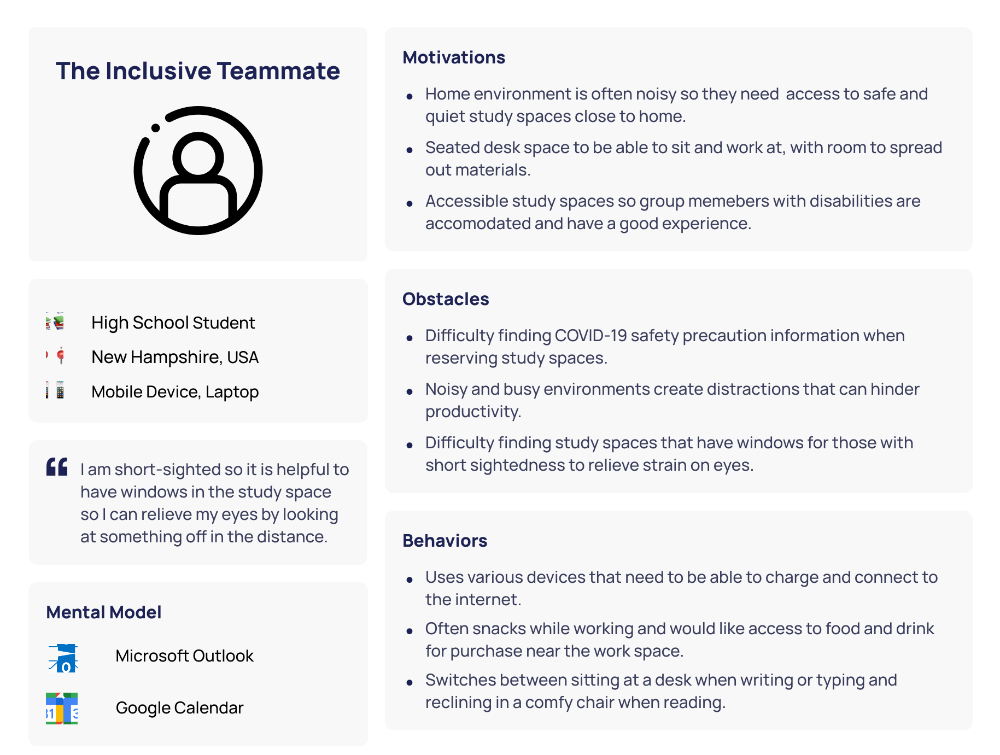
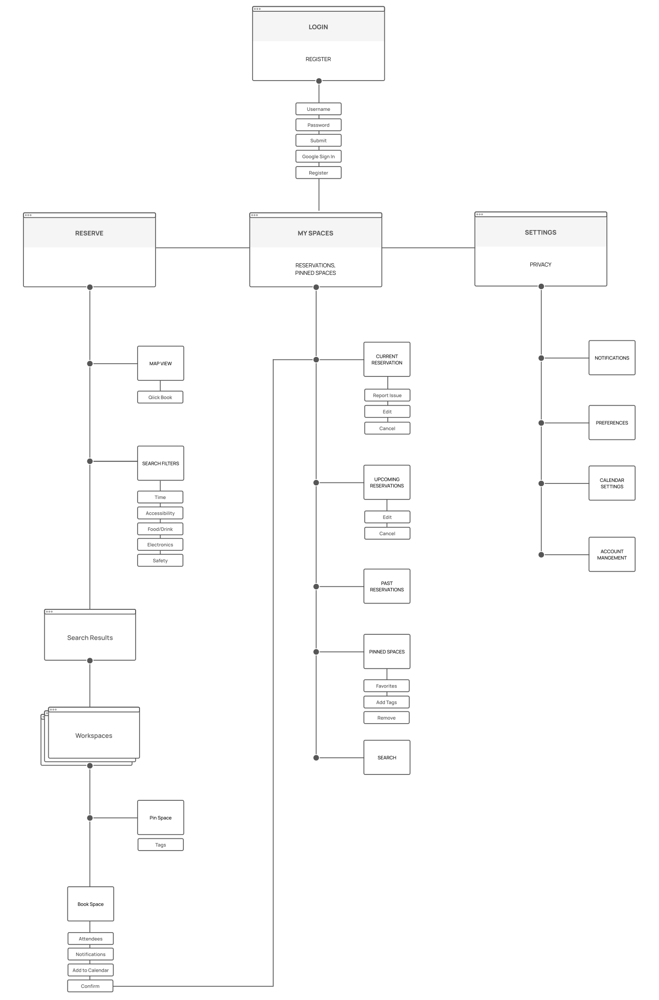
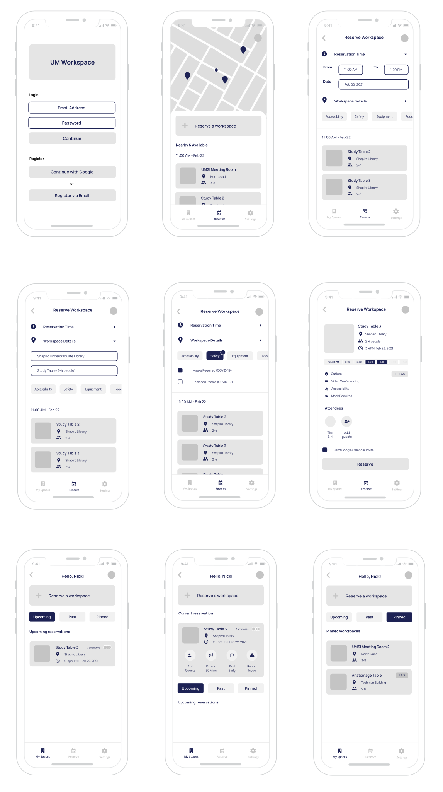

Design Problem
“Your school wants to provide dedicated spaces for students to help them focus on their academic studies. Design an experience for students, professors, and members of the school community to reserve work desks/spaces in the library. Consider the experience of checking availability, reserving the space, and reporting any issues.”
Project Overview
- Discipline: Interaction Design
- Tools Used: Figma, Photoshop, Illustrator, Otter.ai
Approach
To solve for this design problem, I took a user-centered approach, including stakeholders throughout the interaction design process. I began by doing domain research and conducting a competitive analysis to understand the product landscape. Next, I drafted interview protocol and I conducted virtual stakeholder interviews to identify user needs. From there, I crafted user personas and interaction scenarios. Next, I was able to align on a core set of features by building a site map that ultimately went on to inform the wireframes. Using Figma, I designed a high fidelity prototype. After gathering additional user feedback, I iterated on the concept to create a “final” version of the design solution.
Research & Discovery
Domain research
There are many different digital tools out there that help community members reserve workspaces on university campuses. By analyzing web applications designed by UC Berkeley Library, University of Michigan Study Spaces, and even wework, I gained an understanding of the solutions and features that currently exist. Most university websites are free and accessible to all in the community, but some contain certain restrictions when it comes to reserving workspaces. These sites offer reservation services typically with some form of calendar view for users to select time slots. These websites tend to have limited search functionality, and typically do not offer a map view. However, wework’s search filters and map view are super helpful features and make it much easier to find available workspaces.

Stakeholder Interviews
In order to gain information about the domain and user needs, I began drafting research questions to conduct stakeholder interviews. The questions cover the general problem area and seek to gather sufficient details to inform personas. Using zoom video conferencing technology, I interviewed three students at various levels of academia living in different states within the US. The overarching research questions can be found below:
- What motivates people to use workspace reservation products and what basic tasks help them do so successfully?
- What products, services, or methods do school communities currently use to book workspaces?
- What expectations do people have for new products and services?
- What information or wherewithal is required for people to reserve communal study spaces?
- What problems or frustrations do school communities encounter with the existing workspace booking services?
Personas
I recorded the stakeholder interviews and transcribed them using otter.ai in order to further analyze the findings. Using Figma, I mapped out and clustered related affinity notes which allowed me to draw high-level themes from the qualitative data. The insights were then used to create two personas. Due to the limited quantity of stakeholders interviewed, I avoided including demographic data and instead focused on the behavioral characteristics of the personas; motivations and frustrations related to shared workspace reservation services.


User Scenarios
Pulling from the two personas that were created, I constructed two interaction scenarios that would be the starting point for determining core functionality for a minimum viable product. In the scenarios, I tried to cover a majority of the key features that would be required to build out a site map.
Scenario 1: The Careful Planner
- Looking for a study space on university campus for three people that is located near the dorms.
- Adds this criteria to the application and receives a map view of available workspaces.
- Reserves a workspace and invites others.
- Receives a confirmation email & push notification, and adds reservation to personal calendar.
- Edits the location and time of the reservation and sends an update to group members.
- Receives a push notification reminder prior to reservation.
Scenario 2: The Inclusive Teammate
- Needs to find a workspace that is wheelchair accessible.
- Wants to ensure that masks are required in the study space and other COVID-19 precautions are taken.
- Finds a workspace on the app that satisfies the criteria and reserves it.
- Arrives at the room and notices equipment is missing.
- Reports the issue and chats with staff who helps resolve problem.
Design
Site Map
Next, I built a site map to visualize and document the features uncovered in the interaction scenarios. By iterating on the site map, I eventually had all of the core features and interaction flows visually represented. The site map would become a helpful artifact to reference throughout the wireframe design process.

Wireframes
The wireframes were designed to cover a majority of the interactions and components outlined in the site map. This includes the login flow, search functionality, reserving a workspace, current workspace options, and pinned workspaces.

Reflection
The next steps after building the wireframes would be produce a visual style guide and create a basic high fidelity prototype. The prototype would be used to conduct usability tests in order to identify issues and improve upon the visual and interaction design. Those findings would inform a final high fidelity working prototype.
Check out some of my other case studies.